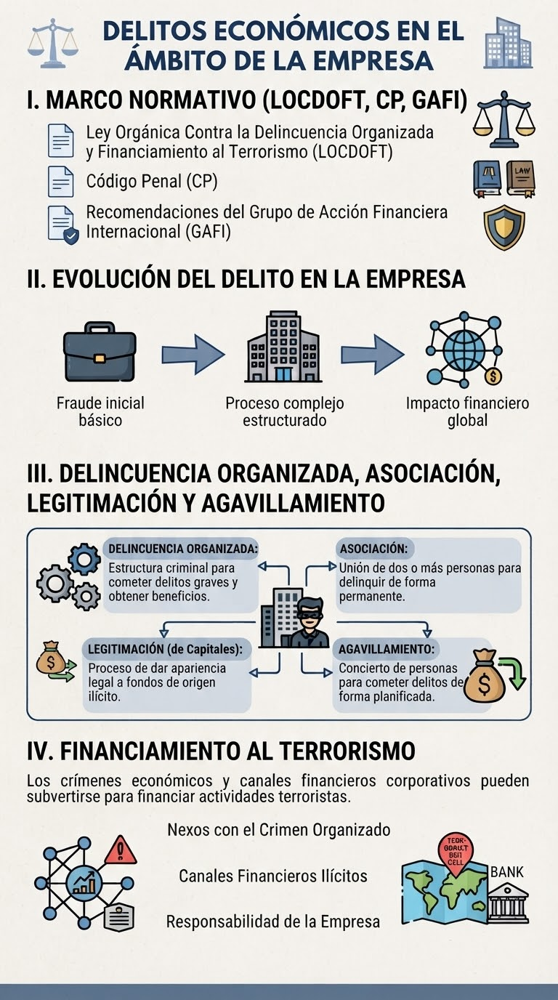

Marco Normativo y Conceptos
Eje central entre la LOCDOFT, el Código Penal y los estándares del GAFI en las empresas. Toca cada norma para desplegar:
Evolución del Delito en la Empresa
Un delito económico de alto impacto escala progresivamente aprovechando la estructura corporativa:
Delincuencia Organizada, Asociación, Legitimación y Agavillamiento
Estos cuatro conceptos conectan al sujeto/estructura, la forma de actuar y el tratamiento del dinero.
Estructura criminal (o persona jurídica instrumentalizada) orientada a cometer delitos graves y obtener beneficios.
Unión permanente (Art. 37 LOCDOFT) dentro de delincuencia organizada.
Concierto común (Art. 286 CP) de 2 o más personas para delinquir.
Da salida y apariencia legal a las ganancias ilícitas de la asociación; a su vez, lavar dinero complejo exige coordinación societaria.
Comparador Forense
Ley especial contra Delincuencia Organizada. Aplica a redes estructuradas o personas jurídicas orientadas a delitos graves, con escala penal severa. Basta el solo hecho de asociarse.
Figura clásica del Código Penal ordinario cuando dos o más personas se asocian para cometer delitos comunes, con menor escala de penas que la LOCDOFT.
Doble Conexión Operativa
1. De la estructura al lavado: Una organización que comete delitos lucrativos (económicos, fiscales o corrupción) necesita dar apariencia legal a esas ganancias mediante legitimación de capitales.
2. Del lavado a la asociación: Blanquear capitales a gran escala requiere varias personas, testaferros o sociedades, reconectando con la asociación ilícita.
Financiamiento al Terrorismo
Los crímenes económicos y canales financieros corporativos pueden subvertirse para financiar actividades terroristas.
Legitimación de Capitales
El dinero casi siempre proviene de un delito previo y el objetivo es "limpiarlo" o darle apariencia legal en la economía formal.
Financiamiento al Terrorismo
Importa el destino terrorista de los fondos. Pueden provenir de fuentes ilícitas (narcotráfico, extorsión, contrabando, fraude) o aparentemente lícitas (donaciones, comercios, recursos empresariales desviados).
¿Quién puede realizarlo?
Toca cada categoría de actor para ver su alcance:
Sentencia N° 6 — Sala de Casación Penal del TSJ
La Sala se avoca de oficio e interpreta los elementos constitutivos y el alcance del delito de legitimación de capitales bajo la Ley Orgánica contra la Delincuencia Organizada y Financiamiento al Terrorismo (LOCDOFT).
Infografía Oficial (1795268791064.jpg)
Síntesis visual consultada por el participante durante la exposición para que el jurado evaluador verifique la correspondencia exacta con los apuntes jurídicos:

Material Audiovisual Relacionado
Este material audiovisual ilustra en la práctica cómo operan los delitos económicos dentro de la estructura empresarial, mostrando la delgada línea entre la gestión mercantil lícita y la instrumentalización societaria para la legitimación de capitales.
Refuerza la importancia del cumplimiento normativo (Compliance) exigido por las Recomendaciones del GAFI y la LOCDOFT (debida diligencia, identificación del beneficiario final y reporte de operaciones sospechosas) para evitar la responsabilidad penal de la empresa y sus directivos.
Verifica que WhatsApp Video 2026-11-21 at 19.27.44.mp4 esté en la raíz del repositorio o ingresa la URL directa (raw.githubusercontent.com):
Infografía (1795268791064.jpg)
I. MARCO NORMATIVO (LOCDOFT, CP, GAFI)
II. EVOLUCIÓN DEL DELITO EN LA EMPRESA
III. DELINCUENCIA ORGANIZADA, ASOCIACIÓN, LEGITIMACIÓN Y AGAVILLAMIENTO
IV. FINANCIAMIENTO AL TERRORISMO
Los crímenes económicos y canales financieros corporativos pueden subvertirse para financiar actividades terroristas.